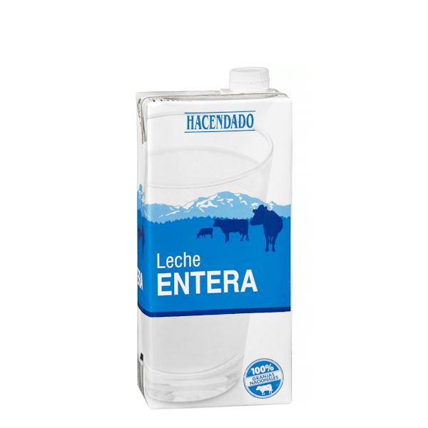

| Volver atras |
|---|

Producto lácteo básico sometido a tratamiento UHT para conservar intactas todas sus propiedades nutricionales, sabor y frescura durante más tiempo. Al mantener todo su contenido graso natural, ofrece un cuerpo cremoso, una textura suave y un sabor rico y tradicional a leche de toda la vida. Es una fuente fundamental de calcio, proteínas de alto valor biológico y vitaminas liposolubles (A y D). Resulta imprescindible para consumir sola, mezclar con café o cacao, elaborar batidos o utilizar como base en repostería y salsas como la bechamel.